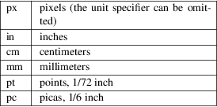

rsvg-convert − Render SVG documents to PNG images, or convert them to PDF or PS.
Convert an SVG to PNG at its "natural size" and write it to standard output:
rsvg−convert input.svg > output.png
Specify an output filename; the input filename must be the last argument:
rsvg−convert −−output=output.png input.svg
Configure dots−per−inch (DPI) for SVGs that have physical units, as in <svg width="5cm" height="3cm"> − the default is 96 DPI:
rsvg−convert −−dpi−x=300 −−dpi−y=300 input.svg > output.png
Render an SVG at a specific pixel size, scaled proportionally:
rsvg−convert −−width=1024 −−height=768 −−keep−aspect−ratio input.svg > output.png
rsvg−convert renders SVG documents into PNG raster images, or converts them to PDF or PS as vector objects. By default rsvg−convert will render an SVG document to a raster PNG image and write it to standard output:
rsvg−convert input.svg > output.png
To select another format, use the −−format option:
rsvg−convert −−format=pdf input.svg > output.pdf
You can use rsvg−convert as part of a pipeline; without an argument for the input filename it will read the document from standard input:
cat input.svg | rsvg−convert > output.png
SPECIFYING
THE RENDERED SIZE
You can use the −−width and
−−height options to specify the size of
the output image. Most of the time you should specify
−−keep−aspect−ratio to scale
the image proportionally; for compatibility with old
versions this is not the default.
rsvg−convert −−width=100 −−height=200 −−keep−aspect−ratio input.svg > output.png
You can also specify dimensions as CSS lengths, for example 10px or 8.5in. The unit specifiers supported are as follows:

The following will create a 600*900 pixel PNG, or 2*3 inches at 300 dots−per−inch:
rsvg−convert −−width=2in −−height=3in −−keep−aspect−ratio −−dpi−x=300 −−dpi−y=300 input.svg > output.png
This will scale an SVG document to fit in an A4 page and convert it to PDF:
rsvg−convert −−format=pdf −−width=210mm −−height=297mm −−keep−aspect−ratio input.svg > output.pdf
SPECIFYING A
PAGE SIZE
By default the size of the output comes from the rendered
size, which can be specified with the
−−width and −−height
options, but you can specify a page size independently of
the rendered size with −−page−width
and −−page−height, together with
−−top and −−left to
control the position of the rendered image within the page.
In short:
|
• |
−−page−width and −−page−height together − set the page size. | ||
|
• |
−−top and −−left − set the margins. | ||
|
• |
−−width and −−height − set the rendered size. |
This will create a PDF with a landscape A4 page, by scaling an SVG document to 10*10 cm, and placing it with its top−left corner 5 cm away from the top and 8 cm from the left of the page:
rsvg−convert −−format=pdf −−page−width=297mm −−page−height=210mm −−width=10cm −−height=10cm −−keep−aspect−ratio −−top=5cm −−left=8cm input.svg > output.pdf
SPECIFYING A
SCALE FACTOR INSTEAD OF A RENDERED SIZE
The −−zoom option lets you scale the
natural size of an SVG document. For example, if
input.svg is a document with a declared size of
100*200 pixels, then the following command will render it at
250*500 pixels (zoom 2.5):
rsvg−convert −−zoom=2.5 input.svg > output.png
You can limit the maximum scaled size by specifying the −−width and −−height options together with −−zoom. Here, the image will be scaled 10x, but limited to 1000*1000 pixels at the most:
rsvg−convert −−zoom=10 −−width=1000 −−height=1000 input.svg > output.png
If you need different scale factors for the horizontal and vertical dimensions, use the −−x−zoom and −−y−zoom options instead of −−zoom.
CREATING A
MULTI−PAGE DOCUMENT
The "pdf", "ps", and "eps"
output formats support multiple pages. These can be created
by combining multiple input SVG files. For example, this PDF
file will have three pages:
rsvg−convert −−format=pdf page1.svg page2.svg page3.svg > out.pdf
The size of each page will be computed, separately, as described in the DEFAULT OUTPUT SIZE section. This may result in a PDF being produced with differently−sized pages. If you need to produce a PDF with all pages set to exactly the same size, use the −−page−width and −−page−height options.
For example, the following command creates a three−page PDF out of three SVG documents. All the pages are portrait US Letter, and each SVG is scaled to fit so that there is a 1in margin around each page (hence the width of 6.5in and height of 9in for the rendered size).
rsvg−convert −−format=pdf −−page−width=8.5in −−page−height=11in −−width=6.5in −−height=9in −−keep−aspect−ratio −−top=1in −−left=1in pg1.svg pg2.svg pg3.svg > out.pdf
CONVERSION
OF PIXELS BASED ON THE DOTS−PER−INCH
rsvg−convert uses the
−−dpi−x and
−−dpi−y options to configure the
dots−per−inch (DPI) by which pixels will be
converted to/from physical units like inches or centimeters.
The default for both options is 96 DPI.
Consider this example SVG, which is nominally declared to be 2*3 inches in size:
<svg xmlns="http://www.w3.org/2000/svg" width="2in" height="3in"> <!−− graphical objects here −−> </svg>
The following commands create PNGs of different sizes for the example SVG above:
rsvg−convert two−by−three.svg > output.png #### creates a 192*288 pixel PNG
rsvg−convert −−dpi−x=300 −−dpi−y=300 two−by−three.svg > output.png #### creates a 600*900 pixel PNG
Note that the final pixel dimensions are rounded up to the nearest pixel, to avoid clipping off the right/bottom edges. In the following example, rsvg−convert will generate a PNG 300x300 pixels in size:
rsvg−convert −−width=299.5 −−height=299.4 input.svg > output.png #### outputs 300x300 pixel PNG with a fractionally−scaled image
If you specify dimensions in physical units, they will be multiplied by the dots−per−inch (DPI) value to obtain dimensions in pixels. For example, this will generate a 96x96 pixel PNG, since it is 1x1 inch at the default 96 DPI:
rsvg−convert −−width=1in −−height=1in input.svg > output.png #### outputs 96x96 pixel PNG
Correspondingly, this will generate a 300x300 pixel PNG, since it is 1x1 inch at 300 DPI:
rsvg−convert −−width=1in −−height=1in −−dpi−x=300 −−dpi−y=300 input.svg > output.png #### outputs 300x300 pixel PNG
DEFAULT
OUTPUT SIZE
If you do not specify −−width or
−−height options for the output size,
rsvg−convert will figure out a "natural
size" for the SVG as follows:
|
• |
SVG with width and height in pixel units (px): <svg width="96px" height="192px"> For PNG output, those same dimensions in pixels are used. For PDF/PS/EPS, that pixel size is converted to physical units based on the DPI value (see the −−dpi−x and −−dpi−y options), | ||
|
• |
SVG with width and height in physical units: <svg width="1in" height="2in"> For PNG output, the width and height attributes get converted to pixels, based on the DPI value (see the −−dpi−x and −−dpi−y options). For PDF/PS/EPS output, the width/height in physical units define the size of the PDF unless you specify options for the page size; see SPECIFYING A PAGE SIZE above. | ||
|
• |
SVG with viewBox only: <svg viewBox="0 0 20 30"> The size of the viewBox attribute gets used for the pixel size of the image as in the first case above. | ||
|
• |
SVG with width and height in percentages: <svg width="100%" height="100%" viewBox="0 0 20 30"> Percentages are meaningless unless you specify a viewport size with the −−width and −−height options. In their absence, rsvg−convert will just use the size of the viewBox for the pixel size, as described above. | ||
|
• |
SVG with no width, height, or viewBox: rsvg−convert will measure the extents of all graphical objects in the SVG document and render them at 1:1 scale (1 pixel for each CSS px unit). It is strongly recommended that you give SVG documents an explicit size with the width, height, or viewBox attributes. |
BACKGROUND
COLOR
You can use the −−background−color
option (−b for short) to specify the background
color that will appear in parts of the image that would
otherwise be transparent. This option accepts the same
syntax as the CSS color property, so you can use
#rrggbb syntax, or CSS named colors like
white, or rgba().
rsvg−convert
−−background−color=white
input.svg > output.png #### opaque
white
rsvg−convert −b '#ff000080' input.svg
> output.png #### translucent red −
use shell quotes so the # is not interpreted as a
comment
SELECTING A
LANGUAGE FOR MULTI−LANGUAGE SVG
An SVG document can use the <switch> element
and children with the systemLanguage attribute to
provide different content depending on the user's language.
For example:
<svg xmlns="http://www.w3.org/2000/svg" width="200" height="100">
<rect width="200" height="100" fill="white"/>
<g transform="translate(30, 30)" font−size="20">
<switch allowReorder="yes">
<text systemLanguage="es">Español</text>
<text systemLanguage="de">Deutsch</text>
<text systemLanguage="fr">Français</text>
<text>English fallback</text>
</switch>
</g>
</svg>
You can use the −−accept−language option to select which language to use when rendering. This option accepts strings formatted like an HTTP Accept−Language header, which is a comma−separated list of BCP47 language tags: https://www.rfc−editor.org/info/bcp47
rsvg−convert −−accept−language=es−MX input.svg > output.png #### selects Mexican Spanish; renders "Español".
USER
STYLESHEET
You can include an extra CSS stylesheet to be used when
rendering an SVG document with the
−−stylesheet option. The stylesheet will
have the CSS user origin, while styles declared in the SVG
document will have the CSS author origin. This means your
extra stylesheet's styles will override or augment the ones
in the document, unless the document has !important
in its styles.
rsvg−convert −−stylesheet=extra−styles.css input.svg > output.png
For example, if this is input.svg:
<svg xmlns="http://www.w3.org/2000/svg" width="100" height="100"> <rect width="200" height="100" fill="white"/> <rect class="recolorable" x="10" y="10" width="50" height="50" fill="red"/> <text x="10" y="80" font−size="20" fill="currentColor">Hello</text> </svg>
And this is extra−styles.css:
.recolorable { fill: blue; }
* { color: green; }
Then the PNG created by the command above will have these elements:
|
• |
A blue square instead of a red one, because of the selector for the the recolorable class. | ||
|
• |
Text in green, since a fill with currentColor gets substituted to the value of the color property, and the * selector applies to all elements. |
GENERAL
OPTIONS
−f format, −−format=[png,
pdf, ps, eps, svg]
Output format for the rendered document. Default is png.
−o filename, −−output filename
Specify the output filename. If unspecified, outputs to standard output.
−v, ``−−version
Display what version of rsvg−convert you are running.
|
−−help |
Display a summary of usage and options. |
SIZE AND
POSITION
In the following, <length> values must be
specified with CSS <length> syntax:
https://developer.mozilla.org/en−US/docs/Web/CSS/length.
For example, 640px or 25cm.
−−page−width <length>
−−page−height
<length>
Page size of the output document; both options must be used together. The default is to use the image's width and height as modified by the options below.
−−top <length>
Distance between top edge of the page and the rendered image. Default is 0.
−−left <length>
Distance between left edge of the page and the rendered image. Default is 0.
−w <length>, −−width <length>
Width of the rendered image. If unspecified, the natural width of the image is used as the default. See the section "SPECIFYING DIMENSIONS" above for details.
−h <length>, −−height <length>
Height of the rendered image. If unspecified, the natural height of the image is used as the default. See the section "SPECIFYING DIMENSIONS" above for details.
−a, −−keep−aspect−ratio
Specify that the aspect ratio is to be preserved, i.e. the image is scaled proportionally to fit in the −−width and −−height. If not specified, aspect ratio will not be preserved.
−d number, −−dpi−x number
Set the X resolution of the image in pixels per inch. Default is 96 DPI.
−p number, −−dpi−y number
Set the Y resolution of the image in pixels per inch. Default is 96 DPI.
−x number, −−x−zoom number
Horizontal scaling factor. Default is 1.0.
−y number, −−y−zoom number
Vertical factor factor. Default is 1.0.
−z number, −−zoom number
Horizontal and vertical scaling factor. Default is 1.0.
CONTROLLING
THE RENDERED APPEARANCE
−b <color>,
−−background−color [black, white,
#abccee, #aaa...]
Specify the background color. If unspecified, none is used as the default; this will create transparent PNGs, or PDF/PS/EPS without a special background. The <color> must be specified in CSS <color> syntax: https://developer.mozilla.org/en−US/docs/Web/CSS/color_value. For example, black, #ff0000, rgba(0.0, 1.0, 0.0, 1.0).
−s filename.css, −−stylesheet filename.css
Filename of a custom CSS stylesheet.
−l language−tag, −−accept−language [es−MX,fr,en]
Specify which languages will be used for SVG documents with multiple languages. The string is formatted like an HTTP Accept−Language header, which is a comma−separated list of BCP47 language tags: https://www.rfc−editor.org/info/bcp47. The default is to use the language specified by environment variables; see the section "ENVIRONMENT VARIABLES" below.
OPTIONS
SPECIFIC TO PDF/PS/EPS OUTPUT
−−keep−image−data
For SVG documents that reference PNG or JPEG images, include the original, compressed images in the final output, rather than uncompressed RGB data. This is the default behavior for PDF and (E)PS output.
−−no−keep−image−data
Do not include the original, compressed images but instead embed uncompressed RGB date in PDF or (E)PS output. This will most likely result in larger documents that are slower to read.
MISCELLANEOUS
−i object−id,
−−export−id object−id
Allows to specify an SVG object that should be exported based on its XML id attribute. If not specified, all objects will be exported.
−u, −−unlimited
The XML parser has some guards designed to mitigate large CPU or memory consumption in the face of malicious documents. It may also refuse to resolve data: URIs used to embed image data in SVG documents. If you are running into such issues when converting a SVG, this option allows to turn off these guards.
−−testing
For developers only: render images for librsvg's test suite.
−−completion shell−name
Generate a script for a shell's Tab completion. You can use bash, elvish, fish, powershell, and zsh for the shell's name. Rsvg−convert will then write a suitable script to standard output.
SOURCE_DATE_EPOCH
If the selected output format is PDF, this variable can be used to control the CreationDate in the PDF file. This is useful for reproducible output. The environment variable must be set to a decimal number corresponding to a UNIX timestamp, defined as the number of seconds, excluding leap seconds, since 01 Jan 1970 00:00:00 UTC. The specification for this can be found at https://reproducible−builds.org/specs/source−date−epoch/
System language
Unless the −−accept−language option is specified, the default is to use the system's environment to detect the user's preferred language. This consults the environment variables LANGUAGE, LC_ALL, LC_MESSAGES, and LANG.
Librsvg source repository and bug tracker: https://gitlab.gnome.org/GNOME/librsvg
Wiki project page: https://wiki.gnome.org/Projects/LibRsvg
SVG1.1 specification: http://www.w3.org/TR/SVG11/
SVG2 specification: http://www.w3.org/TR/SVG2
GNOME project page: http://www.gnome.org/